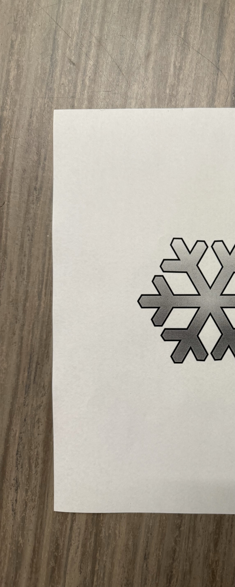
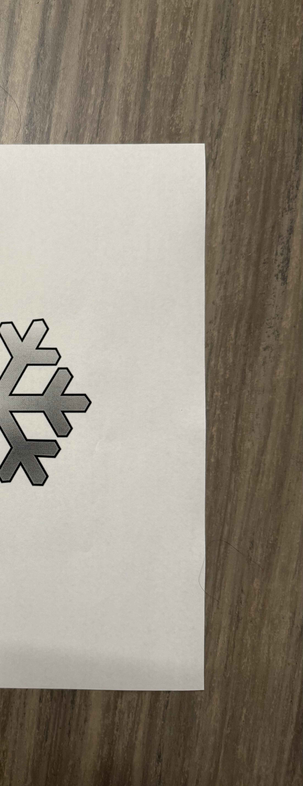

Summary
This project implements a full panoramic image stitching pipeline from scratch. Given two overlapping images and a set of manually selected point correspondences, the system estimates a projective homography transform, warps one image into the coordinate frame of the other, and blends them into a seamless wide-field composite.
- Implemented point-correspondence homography estimation using least-squares DLT
- Applied projective warping to align image coordinate frames
- Produced high-resolution stitched panoramas across multiple scenes
- Proved correctness of the homography derivation in the written report
Approach
Point correspondences
Corresponding points between image pairs were selected manually using a custom
point-picking tool (pick_points.py). Each correspondence
provides a constraint on the 3×3 projective homography matrix H,
which maps points in one image plane to the other via:
x' ~ H · x (in homogeneous coordinates)
With at least 4 correspondences, H is fully determined (8 DOF) and solved in closed form via the Direct Linear Transform (DLT).
Homography estimation
Each point pair contributes two linear equations in the entries of H. Stacking these into a system Ah = 0 and solving via SVD yields the least-squares homography. Translation and rotation components were validated independently through a geometric proof included in the written report.
Image warping and stitching
With H estimated, the source image is warped into the reference frame using inverse mapping and bilinear interpolation. The warped image is then composited with the reference image to produce the final panorama.
Results
The pipeline was tested on multiple scene pairs including outdoor snow scenes and indoor laptop/desk environments. The stitched panorama below was produced from two overlapping frames with manually selected point correspondences.
Input images


Stitched panorama